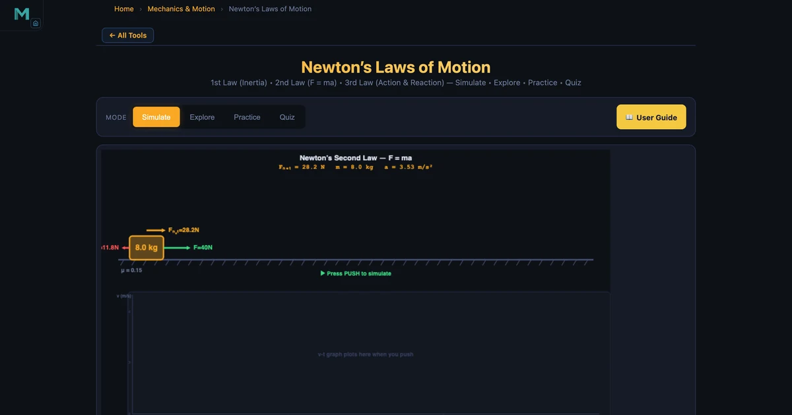

Newton's Laws of Motion — Understanding F=ma with a Live Simulator

- Newton's three laws are: (1) an object keeps constant velocity unless a net force acts on it (inertia); (2) net force equals mass times acceleration, F = ma, so a = F_net / m; (3) every action force has an equal and opposite reaction force acting on a different body.
- On a flat surface with friction the net force is F_net = F_applied − μmg — e.g. 40 N applied to an 8 kg block with μ = 0.15 gives friction 11.77 N, F_net 28.23 N, and a = 3.53 m/s².
- On an incline of angle θ the acceleration down the slope is a = g(sin θ − μ cos θ), which depends only on angle and friction coefficient — mass cancels out.
Every engineering calculation involving motion starts with Newton's laws of motion. They are three rules that, between them, explain why spacecraft stay in orbit, why seatbelts save lives, and why a heavier loaded truck needs a bigger engine than an empty one. The NHIT VisualLab Newton's Laws tool lets you interact with all three — watch the block slide, read the live numbers, and actually see what happens when you change mass or friction mid-experiment.
Why the Formulas Feel Easy Until They Don't
Here's a scene that plays out in many first-year mechanics classes. The instructor writes F = ma on the board. Students copy it down. They can substitute numbers and get a correct answer on a quiz. Then the exam question adds a friction coefficient and a 25° incline, and suddenly half the class is either ignoring friction or applying it in the wrong direction.
The problem isn't the formula. It's that F = ma is deceptively short. It hides a lot of decisions: which forces count, how to resolve components on a slope, what the net force actually is after friction. You can't see any of that when it's just symbols on paper. That's precisely why an interactive simulation helps — you move a slider, watch friction change, and see the net force update immediately. The relationship becomes physical, not just algebraic.
Newton's First Law — Inertia and What "Net Force = 0" Really Means
The First Law says: an object at rest stays at rest, and an object in motion stays in motion at constant velocity, unless a net external force acts on it. Simple enough. What trips students up is the word "net." A book sitting on a table has two forces acting on it — gravity pulling down and the normal force pushing up. Both are real forces. But they cancel. The net force is zero. The book doesn't accelerate. It's obeying the First Law perfectly.
In the simulator, switch to First Law mode and set friction to zero. Give the block an initial velocity. It keeps moving at exactly that speed indefinitely — no slowdown, no stop. That's Newton's First Law in its purest form. Now add friction. The block decelerates and stops. The first law hasn't failed; a net force is now acting, which is exactly the condition that allows the second law to take over.
Mass is the measure of inertia. A 70 kg person in a car that stops suddenly will lurch forward at the same acceleration as the car was decelerating — because their inertia resists the change. With a deceleration of 20 m/s² over 0.5 s, the force needed to stop them is 70 × 40 = 2800 N. That number is why seatbelts are engineered the way they are.
Newton's Second Law — F = ma in Every Direction
\[\sum F = ma \quad \Longrightarrow \quad a = \dfrac{F_{\text{net}}}{m}\]
The Second Law is the workhorse of Newtonian mechanics. The key word is net. You must account for every force and find the vector sum before applying a = F/m. On a flat surface with kinetic friction, the net force is:
\[F_{\text{net}} = F_{\text{applied}} - \mu m g\]
In the hero image above, F = 40 N, m = 8 kg, and μ = 0.15. Friction is μmg = 0.15 × 8 × 9.81 = 11.77 N. That gives Fnet = 40 − 11.77 = 28.23 N and acceleration a = 28.23 / 8 = 3.53 m/s². Every one of those numbers appears live in the simulator readout row.
Double the mass to 16 kg and leave everything else unchanged. Friction doubles to 23.54 N, net force drops to 16.46 N, and acceleration becomes just 1.03 m/s² — roughly a quarter of the original value. The relationship a ∝ 1/m is real and immediate in the simulation. Watching the block slow down while reading the live numbers makes the inverse relationship genuinely stick.
Inclined Plane — Resolving Weight Into Components
The inclined plane scenario is where students most often make sign errors. Weight acts straight down. On a slope at angle θ, you need to decompose it into two components: one perpendicular to the surface (which the normal force balances) and one parallel to the surface (which drives the acceleration down the slope).
\[N = mg\cos\theta \qquad W_{\parallel} = mg\sin\theta\]
\[a = g(\sin\theta - \mu\cos\theta)\]
With θ = 30°, m = 10 kg, and μ = 0.1: N = 10 × 9.81 × cos 30° = 84.96 N, W∥ = 49.05 N, friction = 0.1 × 84.96 = 8.50 N, Fnet = 40.55 N, a = 4.06 m/s². Notice that friction is smaller on the incline than on the flat surface for the same mass — because the normal force is reduced by the cosθ factor. That counterintuitive result is one of the best things to demonstrate with the simulator.
Newton's Third Law — Action, Reaction, and Separate Bodies
The Third Law is the one students most often misapply. "For every action, there is an equal and opposite reaction." The critical point — the one that almost never appears in the textbook quote — is that the two forces act on different objects. They cannot cancel each other because cancellation requires forces on the same object.
The simulator demonstrates this beautifully with a cannon and cannonball. The explosion exerts force F on the 2 kg cannonball forward and, by Newton's Third Law, the same force F on the 20 kg cannon backward. Both accelerate, but in opposite directions and at different magnitudes. Cannon recoil acceleration: acannon = F / 20. Cannonball: aball = F / 2. Ten times less mass means ten times more acceleration. Same force, completely different outcomes — because the masses are different.
This is also why rockets work in space. The engine expels exhaust mass backward at high velocity. The exhaust pushes back on the rocket with equal and opposite force. No ground, no air needed. Pure Newton's Third Law. For a 2000 kg rocket with 30 000 N thrust, the net acceleration is (30 000 − 19 620) / 2000 = 5.19 m/s² upward at launch.
How to Use This in a Lesson
Day 1 opener (5 min). Load the simulator on the projector. Click First Law. Set friction to zero and give the block an initial velocity. Ask the class: "Why doesn't it stop?" Most will instinctively say friction, gravity, or air resistance. When you set all resistances to zero, the question becomes genuinely interesting and opens the door to the concept of inertia as a property of mass itself.
Second Law exploration (10 min). Set up the flat surface with default values. Ask pairs to predict what the acceleration will be if you double the mass. Let them calculate it, then verify. The instant agreement between their arithmetic and the simulator readout is satisfying in a way that a textbook answer key never quite is. Try exploring with projectile motion next — it applies the same Second Law equations in two dimensions simultaneously.
Inclined plane (15 min). Start at 0° and increase the angle slowly. Have students watch the normal force decrease and the parallel weight component grow. Ask them to find the critical angle where the block just starts to slide (when mg sinθ > μmg cosθ, i.e., tanθ > μ). For μ = 0.1, that's θ = arctan(0.1) ≈ 5.7°. The simulation confirms it.
Third Law demo (5 min). The cannon scene requires no calculation — just watching. Students rarely appreciate that the cannon moves until they see it. Follow up with everyday examples: feet pushing backward on the ground while walking, water pushed backward by a swimmer's hands.
Try It Yourself
All tools below are free — no account, no download.
Key Takeaways
- Newton's First Law defines inertia: no net force means no change in velocity — a block at constant speed is obeying this law, not "defying" gravity.
- The Second Law gives the quantity: \(a = F_{\text{net}} / m\). Net force is the vector sum of all forces — friction, gravity components, applied loads.
- On an inclined plane, the normal force is \(N = mg\cos\theta\), which makes friction weaker on steeper slopes compared to flat surfaces.
- Newton's Third Law pairs always act on different objects — they can never cancel because cancellation requires forces on the same body.
- For the incline, acceleration only depends on angle and friction coefficient: \(a = g(\sin\theta - \mu\cos\theta)\) — mass cancels completely.
- The free body diagram is not optional — it is the tool that ensures you find the correct net force before applying F = ma.
Frequently Asked Questions
What is Newton's Second Law in simple terms?
Newton's Second Law states that the net force on an object equals its mass times its acceleration: F = ma. Doubling the force doubles the acceleration; doubling the mass halves it. In the simulator, applying 40 N to an 8 kg block with μ = 0.15 gives a net force of 28.2 N and an acceleration of 3.53 m/s².
What is the difference between Newton's First and Second Law?
The First Law says an object will not accelerate unless a net force acts on it — it describes the condition for constant velocity. The Second Law quantifies what happens when a net force does act: a = Fnet / m. The First Law is actually a special case of the Second Law when Fnet = 0.
How does friction affect Newton's Second Law?
Friction opposes motion and reduces the net force. On a flat surface, friction f = μN = μmg. The net force is Fnet = Fapplied − f, so acceleration a = (Fapplied − μmg) / m. With F = 40 N, m = 8 kg, μ = 0.15: friction = 11.77 N, Fnet = 28.23 N, a = 3.53 m/s².
How do you calculate acceleration on an inclined plane?
On a frictionless incline at angle θ, the acceleration is a = g sinθ. With friction (coefficient μ), the acceleration down the slope is a = g(sinθ − μ cosθ). For a 30° incline with μ = 0.1 and m = 10 kg: a = 9.81(sin 30° − 0.1 × cos 30°) = 9.81(0.5 − 0.0866) = 4.05 m/s².
Why do action and reaction forces not cancel each other out?
Action and reaction forces act on different objects, so they cannot cancel. When a cannon fires a 2 kg cannonball with 40 N of thrust, the cannonball accelerates forward at 20 m/s² while the 20 kg cannon recoils backward at 2 m/s². The forces are equal and opposite, but they act on separate bodies, so each object accelerates independently.
Newton's three laws are foundational precisely because they are universal. They work on a 10 kg lab block, a 20 000 kg truck, and a 500 000 kg rocket. The numbers change; the relationships don't. Building intuition for those relationships — not just memorising the formulas — is what separates a student who can solve textbook problems from an engineer who can reason about real systems.
Set the incline, adjust the friction coefficient, and watch Fnet and acceleration update in real time at the Newton's Laws Simulator.